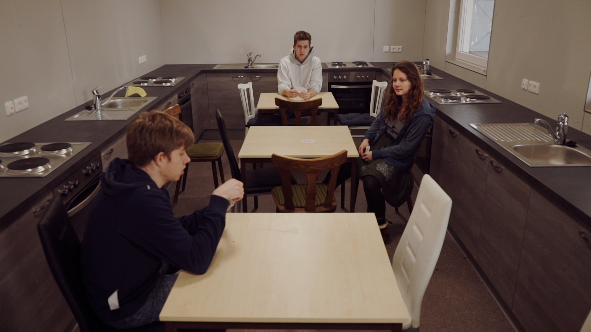

Unused Capacity
2018 · Single-channel video
Unused Capacity is a single-channel video by Nickii Schamborski, 2018.



About the work
In this performative video work, students gain unauthorized access to their former school building where a refugee shelter - fully equipped with kitchens, washing machines, and bedrooms, was built but remained unused and empty due to the 2016 EU-Turkey agreement while refugees died seeking shelter. The student bodies activate these abandoned halls and document them, capturing graffitied swastikas alongside prepared refugee beds revealing the years of institutional negligence. Occupying this now abandoned space, they transform their intrusion into artistic protest and expose the absurdity of idle wealth amid humanitarian crisis.
Zur Arbeit
In dieser performativen Videoarbeit dringen Schüler*innen unbefugt in ihr ehemaliges Schulgebäude ein und erkunden die Räume einer voll ausgestatteten Geflüchteten Unterkunft, die wegen des EU-Türkei-Abkommens von 2016 nie ihren Zweck erfüllte und ungenutzt blieb, während Menschen auf der Flucht sterben. Die Körper der Schüler*innen beleben diese verlassenen Hallen, in denen Hakenkreuze neben den für Geflüchtete vorbereiteten Betten von der Oberflächlichkeit der Planung zeugen. In verschiedenen performativen Akten der Aneignung verwandeln sie ihr Eindringen in künstlerischen Protest und legen die Absurdität des brachliegenden Reichtums inmitten der humanitären Krise offen.
Details
- Year
- 2018
- Type
- Single-channel video
- Specs
- 4K, stereo sound, 12:40 min. Production / Location manager: Aaron Ziegler; Cinematography: hitus Manleitner; School community: Marie Schirmacher, Jonathan Flindt, Felix Rodriguez Rasmussen, Nils Wetzel, Jonas Nicke